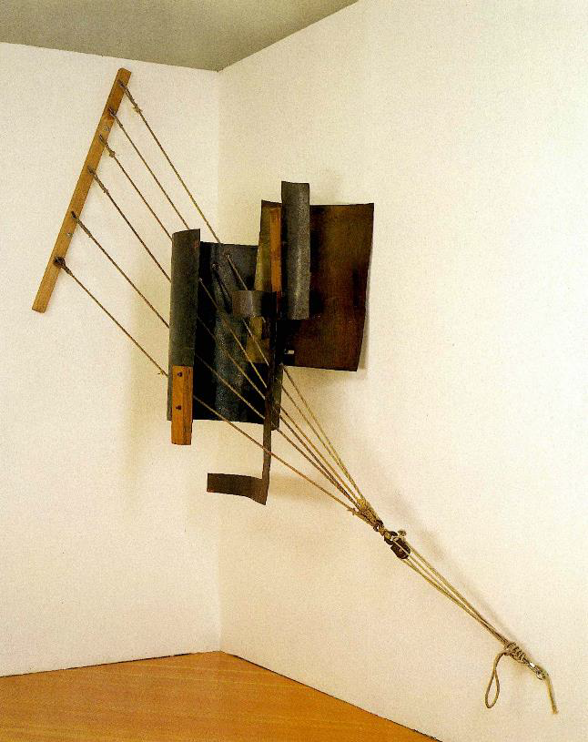
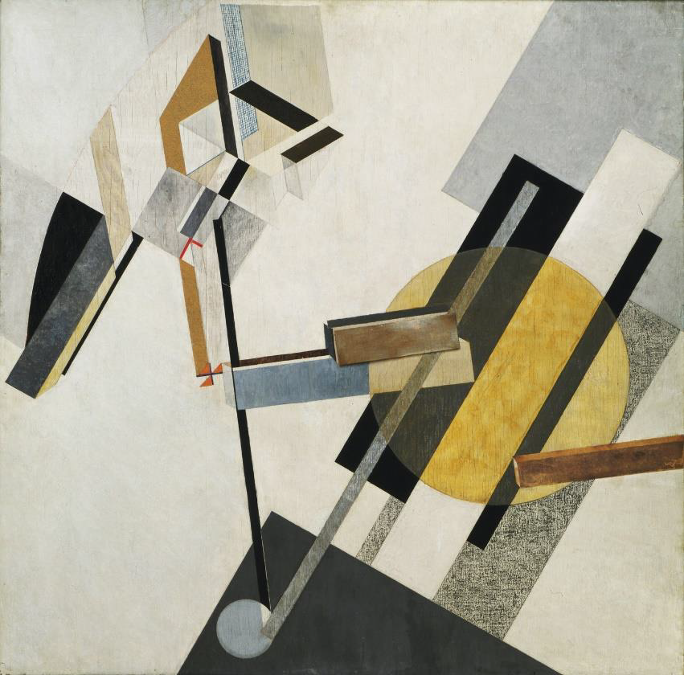

Se trataba de una torre de estilo constructivista de unos 400 metros de alto, superando en altura a la Torre Eiffel de París. Consistiría en una estructura espiral de hierro y acero, volcada hacia un lado en el ángulo del eje terrestre, conteniendo en su interior cuatro estructuras de vidrio con diferentes formas: un cubo, una pirámide, un cilindro y media esfera. Todos estos elementos rotarían a distintas velocidades. El cubo completaría su giro en un año, la pirámide en un mes, el cilindro en un día y la esfera en media hora.Según T. M. Shapiro, que ayudó a Tatlin en la construcción del modelo de la torre, sus dos enormes curvaturas inferiores habían sido ideadas para colocarse a horcajadas sobre el río Nevá.
En su interior se situaría la sede de la Internacional Comunista, así como una oficina de telégrafos y varios restaurantes. Dispondría de una serie de pantallas gigantes por las que se mostrarían las últimas noticias mundiales. Emblema de la “utopía socialista”, el monumento se imaginaba como un faro que alumbra el nuevo mundo.
contrarrelieve

Usando modernos materiales (acero, cobre…) quiso atraer la atención hacia lo constructivo, huyendo del misticismo suprematista de Malevich. Aún siendo algo abstracto, quiso que el espectador reflexionara sobre la gravedad, la tensión, el peso, el equilibrio, la textura… en definitiva, todas las características de lo escultórico.
Por primera vez, una obra tridimensional no representa nada de la naturaleza, no se puede rodear, no necesita un pedestal… Es una escultura, un objeto que podía ser juzgado por sus propios méritos.
Proun 19D

Proun 19D es un óleo suprematista sobre lienzo, papel y collage creado por El Lissitzky entre 1920 y 1921. Se encuentra actualmente en el MOMA (Museo de Arte Moderno de Nueva York).